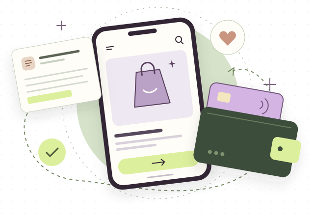

Make the topic researchable.
Define questions about shopping context, payment choices, and expectations of AI.
Google · Consumer Payments · UX Research Internship
Starting with just a project title—“Gen Z, AI, and Payments”—I shaped a mixed-methods study and translated the evidence into actionable next steps for product partners.

What changed
Product and design partners used the insights to inform product direction and prototyping. I translated a broad audience question into opportunities and a research roadmap the team could work with.
A selected overview of my process and contribution. Company-specific findings, recommendations, and internal materials are omitted.
01 / From ambiguity to a plan
“Gen Z, AI, and Payments.” That was the project title I was given at the start of my internship.
My first task was to turn that broad topic into something research could answer. I framed questions about Gen Z’s shopping and payment experiences, designed a study using complementary methods, and translated the evidence into opportunities and follow-up research.
Define questions about shopping context, payment choices, and expectations of AI.
Combine diary research, interviews, and a survey to connect context, motivations, and broader patterns.
Translate the synthesis into opportunities, prototypes for discussion, and a next-step research roadmap.
What shapes how Gen Z shops, chooses how to pay, and approaches emerging AI experiences?
I studied the wider journey around a transaction: shopping context, payment choices, digital wallet needs, and interactions with AI. Looking across the journey helped me connect individual moments of friction to a broader consumer experience.
Research and compare
Make a purchase decision
Select a payment method
Manage the experience afterward
02 / Why these methods
I led a foundational study combining diary research, in-depth interviews, and a survey. Each method contributed a different view of the experience.
34
Capture shopping and payment experiences across everyday situations.
What happens in context?
9
Explore the reasoning behind choices and what matters to participants.
What sits behind the choice?
500+
Extend the view across a larger sample, including older generations for context.
How do patterns compare?
Context Explanation Comparison A fuller account of the experience
I led the study end to end, from research design and execution through synthesis and communication. My toolkit included dscout, User Interviews, Qualtrics, and presentation and prototyping tools.
The methods served complementary purposes: diary research added lived context, interviews explored motivations, and survey research added breadth. The sample sizes describe study scope.
03 / My analysis lens
I brought the research together around shopping context, payment needs, and attitudes toward emerging commerce. These broad questions describe the dimensions I explored.
Examine device choice and purchase context alongside payment behavior.
Explore expectations of AI-assisted shopping, trust, and consumer agency.
Consider the work of managing choices and moving between shopping touchpoints.
An overview of research questions; study-specific answers are omitted.
04 / Making evidence useful
My readout led with a concise executive summary and organized the work into takeaways and opportunity areas. This gave product partners an entry point into a complex mixed-methods study.
Start with the most decision-relevant takeaways.
Connect the takeaways to research evidence and user experiences.
Translate the synthesis into opportunities and follow-up research.
I created four video stories from the diary study and used interactive prototypes alongside the presentation deck to bring the work into stakeholder conversations.
I presented to product, UX Design, and cross-functional partners, including leadership up to Director level. I also co-facilitated a Gen Z focus group to support engagement with the research.
I delivered recommendations and a next-step research roadmap, connecting the synthesis to continued product exploration.
05 / A second workstream
Alongside the foundational study, I conducted a competitive review of payment autofill across browser and system interfaces. This work added an interaction-level perspective to my consumer research.
The lens
I examined the sequence of prompts and transitions around autofill, then summarized the review in a concise presentation.
Process schematic. Product-specific comparisons and recommendations are omitted.
06 / Impact & handoff
Research uptake
Product and cross-functional teams adopted the insights to inform direction and prototyping. The contribution was research influence on product thinking and next steps.
The work brought together two scales of research: a broad study of consumer behavior and a focused interaction review. Across both, my role was to turn a complex question into a story that partners could understand and use.
A good conversation is a good start
I’m exploring UX research opportunities, and related roles in product insights, customer experience, and strategy.